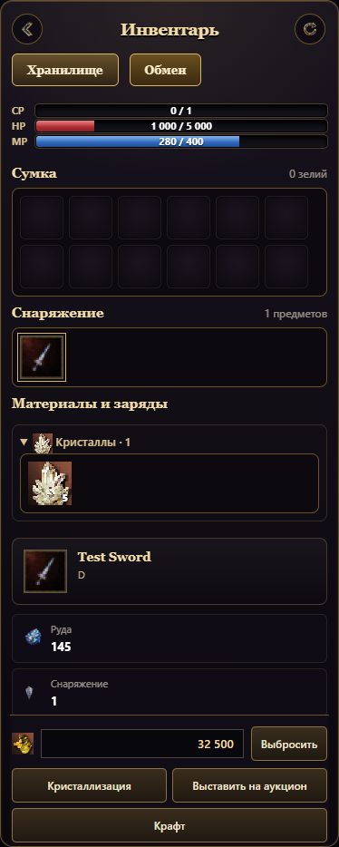
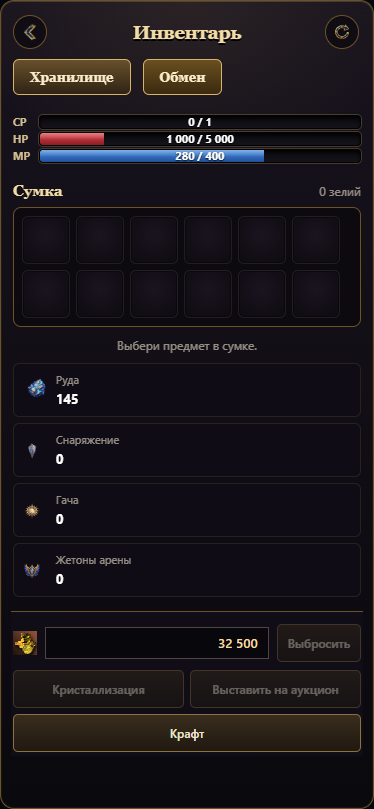
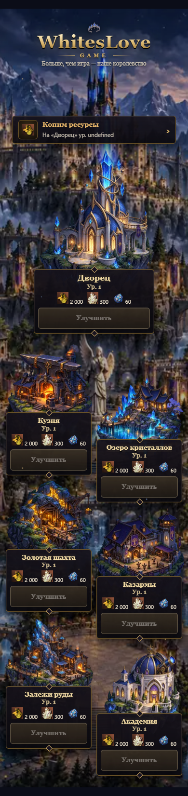

Выбранное снаряжение

Адена и действия находятся внизу инвентаря. Выбросить и кристаллизовать можно после подтверждения в попапе. Аукцион открывает продажу выбранного предмета; крафт — меню ковки. Кристаллы построек отделены от предметов грейда.


